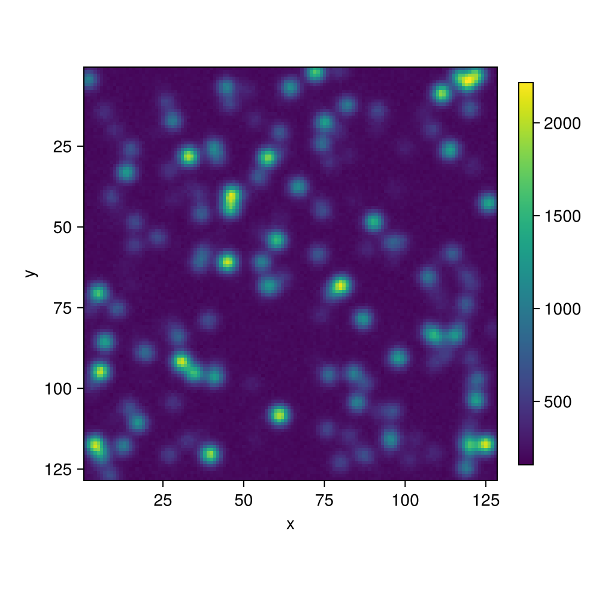
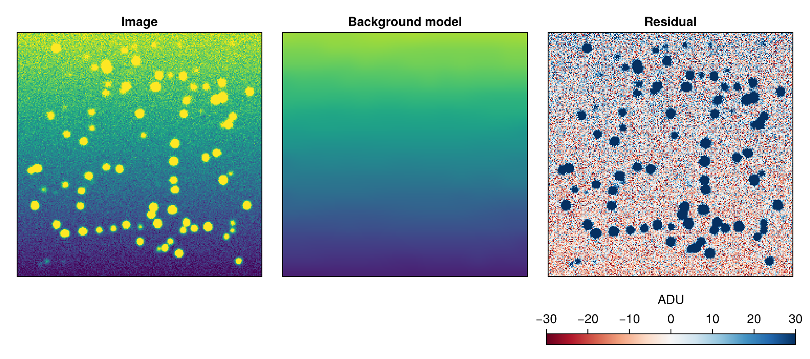
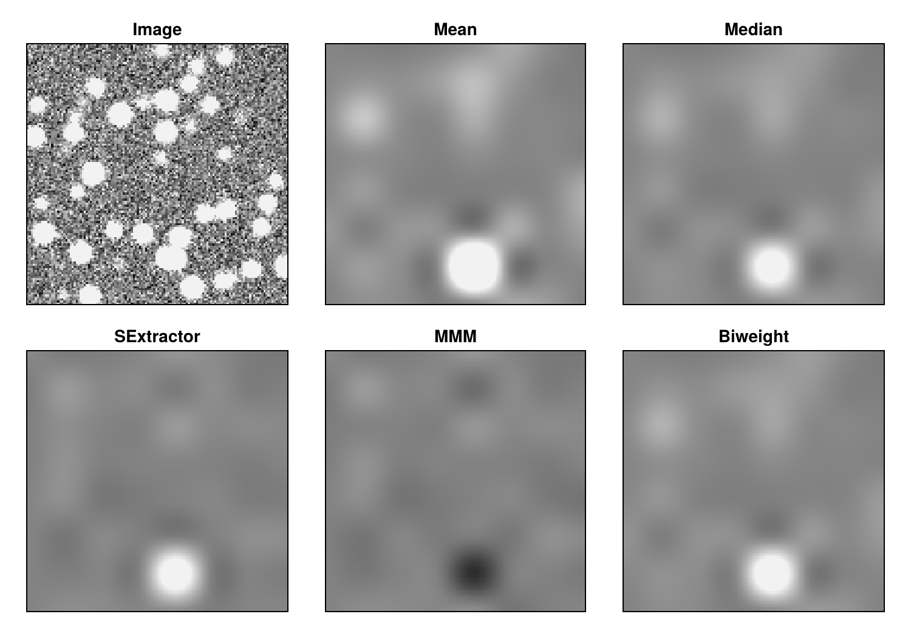
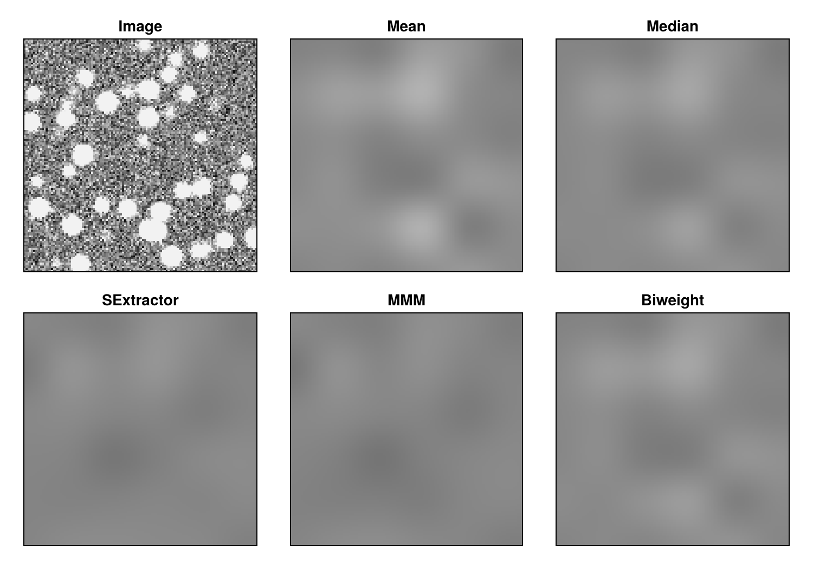
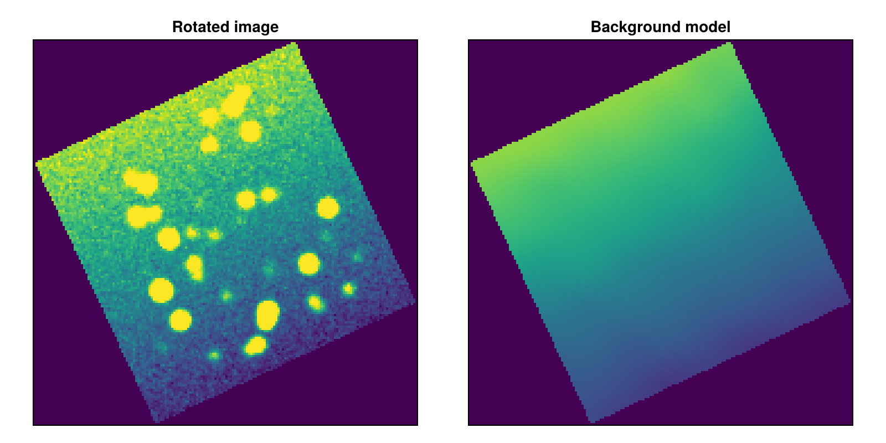
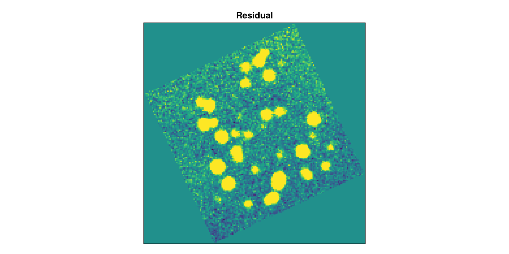

Background Estimation
NOTICE: Our background estimation module is adapted from BackgroundMeshes.jl.
Accurate sky-background subtraction is a prerequisite for reliable photometry. In a typical optical or near-infrared image, the sky background arises from a combination of airglow, zodiacal light, scattered moonlight, and detector bias; it is spatially smooth on scales of tens to hundreds of pixels but can vary across an image at the few-percent level. Point sources, extended objects, and cosmic-ray hits are local enhancements that must be distinguished from — and excluded from — the background estimate.
CrowdPhot.Background provides two complementary interfaces:
| Interface | When to use |
|---|---|
estimate_background | Single scalar estimate for the whole image (or a cutout) |
Background2D | Spatially varying map over a mesh grid |
Both interfaces accept a mask that marks pixels to skip (saturated stars, bad pixels, diffraction spikes, etc.) and support iterative sigma clipping to suppress residual source contamination. The mask is true for pixels that should be skipped.
Location and RMS estimators
All estimation algorithms are encapsulated in small callable structs. Choosing an estimator amounts to trading off noise robustness, sensitivity to source contamination, and computational cost.
Location estimators
| Estimator | Description |
|---|---|
MeanBackground | Arithmetic mean — efficient but sensitive to bright sources |
MedianBackground | Sample median — resistant to outliers up to ~50 % contamination |
SExtractorBackground | Mode approximation 2.5 × median − 1.5 × mean; falls back to the median when the distribution is strongly skewed |
MMMBackground | DAOPHOT-style 3 × median − 2 × mean; assumes positive skew from sources |
BiweightLocationBackground | Tukey biweight location; highly robust but requires a good starting median |
Recommendation: SExtractorBackground (the default) is a good general choice. Consider BiweightLocationBackground when your images contain a high source density and you use a mask to cover the brightest stars.
RMS (scatter) estimators
| Estimator | Description |
|---|---|
StdRMS | Population standard deviation (default) |
MADStdRMS | normalized median absolute deviation 1.4826 × MAD; robust to ~50 % outliers |
BiweightScaleRMS | Biweight midvariance; most robust, slightly higher variance than MAD |
Recommendation: StdRMS works well when sigma clipping has already removed source contamination. Use MADStdRMS or BiweightScaleRMS for a more independent robustness guarantee.
The RMS is computed around the estimated background location, not around an independently recomputed mean. For example, when paired with SExtractorBackground, the scatter is measured around the mode-like estimate 2.5 × median − 1.5 × mean rather than the sample mean, so source contamination does not inflate the RMS through the centering value.
Sigma clipping
Both estimate_background and Background2D support iterative sigma clipping to suppress residual source contamination before the background estimator runs. The clipping algorithm is:
- Compute the median $m$ and standard deviation $s$ of the pixel values in the region (or box, for
Background2D). - Reject pixels with values outside $[m - \sigma s, \; m + \sigma s]$.
- Recompute $m$ and $s$ from the surviving pixels.
- Repeat steps 2–3 until no more pixels are rejected, or until
maxitersiterations (default 10) have been performed.
The clipping uses median and standard deviation as its internal location and scale measures — it does not invoke the configured background estimator (e.g., SExtractorBackground) during the clipping loop. Only after clipping converges is the background estimator applied once to the surviving pixels.
Non-finite (NaN, Inf) and masked pixels are excluded before clipping begins. Pass a scalar sigma for symmetric clipping (the default); for asymmetric clipping, pass a length-2 tuple or vector like sigma = (5.0, 2.0); in this case, a pixel with value x will be clipped if x ≤ median - 5 * std or x ≥ median + 2 * std, so the high-value tail of the pixel distribution is being clipped more strongly than the low-value side. Set sigma = nothing to disable clipping entirely.
Scalar background estimation
For small images or cutouts where a single background level is sufficient, use estimate_background:
using CrowdPhot.Background
r = estimate_background(image)
println(r.bkg) # background level
println(r.bkg_rms) # background scatterThe default pipeline is: exclude non-finite pixels → apply 3σ iterative sigma clipping → estimate with SExtractorBackground and StdRMS.
Example: scalar estimation with a mask
using CrowdPhot, CrowdPhot.Background, StableRNGs, Statistics, CairoMakie
rng = StableRNG(1)
# 128×128 image: flat sky at 200 ADU with 30 Gaussian stars
img = make_gaussians_image(200, (128, 128); rng, background = 200.0,
border = 0, read_noise = 5.0, gain = 1.5)
# Plot image
fig = Figure(size=(500,500),)
ax = Axis(fig[1,1], aspect = DataAspect(), yreversed = true, xlabel = "x", ylabel = "y")
hm = heatmap!(ax, img)
Colorbar(fig[1,2], hm; height = Relative(0.75), valign = :center)
fig
# Estimate without any mask
r_unmasked = estimate_background(img)
println("Unmasked: bkg = ", round(r_unmasked.bkg; digits=2),
" rms = ", round(r_unmasked.bkg_rms; digits=2))
# Build a source mask by thresholding at bkg + 3×rms
src_mask = img .> r_unmasked.bkg + 3 * r_unmasked.bkg_rms
# Re-estimate with the mask
r_masked = estimate_background(img; mask = src_mask)
println("Masked: bkg = ", round(r_masked.bkg; digits=2),
" rms = ", round(r_masked.bkg_rms; digits=2))
println("True bkg: 200.00")Unmasked: bkg = 214.72 rms = 36.87
Masked: bkg = 202.4 rms = 32.65
True bkg: 200.00Spatially varying background with Background2D
When the background varies across the field — as is typical for wide-field cameras or when a large extended source is present — use Background2D. The algorithm proceeds in four stages:
- Tile the image into rectangular boxes of size
box_size. - Estimate the background (and RMS) in each box after masking and sigma clipping. Boxes with fewer than
exclude_percentile% valid pixels are excluded. - Filter the resulting low-resolution mesh with a 2-D median filter of width
filter_sizeto reduce sensitivity to individual contaminated boxes. - Upsample the smoothed mesh back to the full image resolution using a bicubic Catmull-Rom interpolator.
using CrowdPhot.Background
b = Background2D(image, 64)
# Access the full-resolution maps:
b.background # background model
b.background_rms # RMS model
# or the low-resolution mesh:
b.mesh_backgroundChoosing box_size
The box size determines the spatial resolution of the background model. It should be:
- Large enough that each box contains enough sky pixels to estimate the background reliably (typically ≥ 50–100 pixels per box after masking).
- Small enough to track real spatial variation in the background.
Somewhere in the range of image_width / 10 ≤ box_size ≤ image_width / 5 is often reasonable; you should inspect b.mesh_background to verify that the mesh looks smooth and sensible.
Example: spatially varying background
The example below simulates an image with a gradient background (brighter at the bottom) and embedded point sources, then estimates and subtracts it.
using CrowdPhot, CrowdPhot.Background, StableRNGs, CairoMakie
rng = StableRNG(42)
H, W = 256, 256
# --- Build a gradient background image ---
# True background: linear ramp from 150 (top) to 300 (bottom) ADU.
true_bkg = [150.0 + 150.0 * (i - 1) / (H - 1) for i in 1:H, _ in 1:W]
# Render stars on the gradient background with realistic noise.
img = make_gaussians_image(100, (H, W); rng,
background = true_bkg, read_noise = 5.0, gain = 1.5)
# --- Estimate the spatially varying background ---
b = Background2D(img, 16; sigma = 3.0, filter_size = (5, 5))
residual = img .- b.background
# --- Make plot ---
fig = Figure(size = (900, 400))
ax1 = Axis(fig[1, 1]; title = "Image", aspect = DataAspect())
ax2 = Axis(fig[1, 2]; title = "Background model", aspect = DataAspect())
ax3 = Axis(fig[1, 3]; title = "Residual", aspect = DataAspect())
vmin, vmax = 140.0, 320.0
heatmap!(ax1, img'; colorrange = (vmin, vmax))
heatmap!(ax2, b.background'; colorrange = (vmin, vmax))
hm = heatmap!(ax3, residual'; colorrange = (-30.0, 30.0), colormap = :RdBu)
Colorbar(fig[2, 3], hm; vertical = false, label = "ADU")
for ax in (ax1, ax2, ax3)
hidedecorations!(ax)
end
fig
Example: comparing estimators on the same image
First, with a small 16 pixel box size:
rng2 = StableRNG(7)
img2 = make_gaussians_image(50, (128, 128); rng = rng2, background = 200.0,
border = 0, read_noise = 5.0, gain = 1.5)
colorrange = (170.0, 230.0)
fig2 = Figure(size = (750, 520))
ax_img = Axis(fig2[1, 1]; title = "Image", aspect = DataAspect())
heatmap!(ax_img, img2'; colorrange, colormap = :grays)
hidedecorations!(ax_img)
estimators = (MeanBackground(), MedianBackground(), SExtractorBackground(),
MMMBackground(), BiweightLocationBackground())
labels = ("Mean", "Median", "SExtractor", "MMM", "Biweight")
for i in eachindex(estimators)
b = Background2D(img2, 16; estimator = estimators[i], sigma = 3.0, filter_size = 1)
row = i ÷ 3 + 1
col = i % 3 + 1
ax = Axis(fig2[row, col]; title = labels[i], aspect = DataAspect())
heatmap!(ax, b.background'; colormap = :grays, colorrange)
hidedecorations!(ax)
end
fig2
Repeating the measurement with a larger 21 pixel box size, which is less affected by contamination from chance arrangments of stars, but will fail to capture any real variations in sky below this scale.
fig3 = Figure(size = (750, 520))
ax_img = Axis(fig3[1, 1]; title = "Image", aspect = DataAspect())
heatmap!(ax_img, img2'; colorrange, colormap = :grays)
hidedecorations!(ax_img)
estimators = (MeanBackground(), MedianBackground(), SExtractorBackground(),
MMMBackground(), BiweightLocationBackground())
labels = ("Mean", "Median", "SExtractor", "MMM", "Biweight")
for i in eachindex(estimators)
b = Background2D(img2, 21; estimator = estimators[i], sigma = 3.0, filter_size = 1)
row = i ÷ 3 + 1
col = i % 3 + 1
ax = Axis(fig3[row, col]; title = labels[i], aspect = DataAspect())
heatmap!(ax, b.background'; colormap = :grays, colorrange)
hidedecorations!(ax)
end
fig3
Example: rotated and padded image
CCD images that have been rotated (e.g., to align with a world-coordinate grid) and placed inside a larger frame padded with NaN are common in multi-extension FITS files and mosaic pipelines. Background2D handles such images automatically through the mask_coverage keyword, which should be a matrix the same size as the input image where true values indicate a pixel is out of coverage and false indicate it is in coverage.
using CrowdPhot, CrowdPhot.Background, StableRNGs, CairoMakie
rng = StableRNG(13)
# 128×128 image with a gradient background (brighter toward the bottom).
true_bkg = [180.0 + 120.0 * (i - 1) / 127 for i in 1:128, _ in 1:128]
img = make_gaussians_image(40, (128, 128); rng,
background = true_bkg, read_noise = 5.0, gain = 1.5)
# -- Rotate by 25° and embed in a larger NaN-padded frame --
θ = deg2rad(25)
cosθ, sinθ = cos(θ), sin(θ)
H, W = size(img)
cx, cy = (W + 1) / 2, (H + 1) / 2
# Compute the bounding box of the rotated image.
corners = [(1, 1), (1, W), (H, 1), (H, W)]
xs = Float64[]
ys = Float64[]
for (i, j) in corners
push!(xs, cosθ * (j - cx) - sinθ * (i - cy) + cx)
push!(ys, sinθ * (j - cx) + cosθ * (i - cy) + cy)
end
xmin, xmax = floor(Int, minimum(xs)), ceil(Int, maximum(xs))
ymin, ymax = floor(Int, minimum(ys)), ceil(Int, maximum(ys))
H_new = ymax - ymin + 1
W_new = xmax - xmin + 1
rotated = fill(0.0, H_new, W_new)
# Fill valid pixels with bilinear interpolation from the original image.
for j_out in 1:W_new, i_out in 1:H_new
x = j_out + xmin - 1
y = i_out + ymin - 1
# Inverse rotation: where in the original image does (x, y) come from?
j_orig = cosθ * (x - cx) + sinθ * (y - cy) + cx
i_orig = -sinθ * (x - cx) + cosθ * (y - cy) + cy
i0, j0 = floor(Int, i_orig), floor(Int, j_orig)
if i0 >= 1 && i0 < H && j0 >= 1 && j0 < W
di, dj = i_orig - i0, j_orig - j0
rotated[i_out, j_out] =
(1 - di) * (1 - dj) * img[i0, j0] +
(1 - di) * dj * img[i0, j0 + 1] +
di * (1 - dj) * img[i0 + 1, j0] +
di * dj * img[i0 + 1, j0 + 1]
end
end
# -- Mark pixels with values 0 as outside data coverage --
coverage_mask = iszero.(rotated)
# -- Estimate the spatially varying background --
b = Background2D(rotated, 16; coverage_mask, sigma = 3.0, filter_size = (5, 5))
# -- Two-panel plot --
fig = Figure(size = (800, 400))
ax1 = Axis(fig[1, 1]; title = "Rotated image", aspect = DataAspect())
ax2 = Axis(fig[1, 2]; title = "Background model", aspect = DataAspect())
vmin, vmax = 160.0, 320.0
heatmap!(ax1, rotated'; colorrange = (vmin, vmax))
heatmap!(ax2, b.background'; colorrange = (vmin, vmax))
for ax in (ax1, ax2)
hidedecorations!(ax)
end
fig
And now we can look at the background-subtracted image
fig = Figure(size = (800, 400))
ax1 = Axis(fig[1, 1]; title = "Residual", aspect = DataAspect())
heatmap!(ax1, (rotated .- b.background)'; colorrange=(-40.0, 40.0))
hidedecorations!(ax1)
fig
Tips
Source masks significantly improve accuracy at high source densities. Build an initial mask by thresholding at a few sigma above a first-pass background estimate, then re-run
Background2D.filter_sizemust be odd (default(3, 3)). Larger values (e.g.,(5, 5)) smooth over mesh cells that are corrupted by bright isolated stars; but sizes larger than the spatial scale of genuine background variation will bias the estimate.exclude_percentile(default 10%) controls how many pixels per box must survive masking and sigma clipping for the box to be used. Lower values allow poorly constrained boxes into the mesh; higher values force more interpolation.Edge handling: when the image dimensions are not exact multiples of
box_size, the mesh extends to the next multiple via ceil division. Out-of-bounds pixels in partial edge boxes are treated asNaNand excluded automatically. The output always has exactly the same size as the input, with no internal allocation of a padded image.
API reference
CrowdPhot.Background.estimate_background — Function
estimate_background(image;
estimator = SExtractorBackground(),
rms_estimator = StdRMS(),
mask = nothing,
sigma = 3.0,
maxiters = 10) -> NamedTuple{(:bkg, :bkg_rms)}Estimate a global (scalar) background and background RMS for image.
Non-finite values are always excluded. Where mask is provided, pixels at true positions are excluded before any other processing. After masking, iterative sigma clipping is applied when sigma is not nothing.
Returns a NamedTuple (bkg = …, bkg_rms = …).
Arguments
estimator: anAbstractBackgroundEstimatoror any callablef(v::AbstractArray) -> scalar.rms_estimator: anAbstractBackgroundRMSEstimatoror any callable.mask:AbstractArray{Bool}with the same shape asimage;trueexcludes the pixel.nothing(default) uses all finite pixels.sigma: sigma-clipping threshold (default 3.0). Pass a scalar for symmetric clipping. For asymmetric clipping, pass a length-2 tuple or vector, e.g.sigma=(2.0, 5.0). Set tonothingto disable clipping.maxiters: maximum number of sigma-clipping iterations.
Notes
If you have a coverage mask of the type described by Background2D, you should simply combine it with your bad-pixel mask of the interior points as this function only accepts a single mask keyword argument (e.g., mask .= mask .| coverage_mask). For scalar estimation (as this function performs) the distinction between the coverage mask and the user-provided mask is moot – pixels that are true in either mask are excluded from the estimation, so separating the two mask components would be redundant.
Examples
julia> using CrowdPhot.Background
julia> img = fill(100.0, 64, 64);
julia> r = estimate_background(img)
(bkg = 100.0, bkg_rms = 0.0)
julia> r = estimate_background(img; estimator=MMMBackground(), rms_estimator=MADStdRMS())
(bkg = 100.0, bkg_rms = 0.0)CrowdPhot.Background.Background2D — Type
Background2D(image, box_size;
estimator = SExtractorBackground(),
rms_estimator = StdRMS(),
mask = nothing,
coverage_mask = nothing,
fill_value = 0,
filter_size = (3, 3),
exclude_percentile = 10.0,
sigma = 3.0,
maxiters = 10)::Background2DEstimate a spatially varying background by tiling image into boxes, estimating the background (and RMS) in each box, optionally median-filtering the mesh, and upsampling the result back to the original image size via a bicubic Catmull-Rom interpolator.
box_size may be an integer (square boxes) or a (rows, cols) tuple and does not need to be a multiple of the image dimensions; partial edge boxes are included in the mesh.
A box is excluded from the mesh (and filled by interpolation from neighbors) when the fraction of valid (unmasked, finite, not sigma-clipped) pixels falls below exclude_percentile / 100 * box_npixels.
Non-finite image values are automatically excluded. A warning is emitted when the image contains non-finite values that are not covered by mask or coverage_mask.
Arguments
estimator: background location estimator (defaultSExtractorBackground).rms_estimator: background RMS estimator (defaultStdRMS).mask:AbstractMatrix{Bool}wheretruemarks pixels to exclude (contaminated pixels — stars, cosmic rays, bad pixels). Mesh cells excluded due tomaskare filled by interpolation from neighboring cells.coverage_mask:AbstractMatrix{Bool}wheretruemarks pixels outside the data region (e.g., blank areas in a mosaic, corners of a rotated image). These pixels are excluded from estimation, and mesh cells with zero non-coverage pixels are set tofill_valuerather than being interpolated.fill_value: value assigned to out-of-coverage regions in the output maps (default0, giving0.0for floating-point images).filter_size: window size of the 2-D median filter applied to the mesh (must be odd; default(3, 3); use1or(1,1)to skip filtering).exclude_percentile: boxes with fewer than this percent of valid pixels are excluded and filled by interpolation.sigma: sigma-clipping threshold (default 3.0). Pass a scalar for symmetric clipping. For asymmetric clipping, pass a length-2 tuple or vector, e.g.sigma=(2.0, 5.0), to preserve a faint extended source while rejecting bright stars. Set tonothingto disable clipping.maxiters: maximum number of sigma-clipping iterations.
Returns
A Background2D struct containing the following fields.
background: full-resolution background map (same size as the input image).background_rms: full-resolution background-RMS map.mesh_background: low-resolution per-box background estimates.mesh_background_rms: low-resolution per-box background-RMS estimates.box_size: the(rows, cols)box dimensions used.
Examples
julia> using CrowdPhot.Background
julia> img = fill(200.0, 128, 128);
julia> b = Background2D(img, 32);
julia> b.background ≈ fill(200.0, 128, 128)
true
julia> all(iszero, b.background_rms)
trueCrowdPhot.Background.AbstractBackgroundEstimator — Type
AbstractBackgroundEstimatorSupertype for all scalar background location estimators.
Concrete subtypes must implement (::MyEstimator)(data::AbstractArray), returning a scalar background estimate for the pixel values in data.
CrowdPhot.Background.AbstractBackgroundRMSEstimator — Type
AbstractBackgroundRMSEstimatorSupertype for all background RMS (scatter) estimators.
Concrete subtypes must implement (::MyEstimator)(data::AbstractArray), returning a scalar RMS estimate for the pixel values in data.
CrowdPhot.Background.MeanBackground — Type
MeanBackground()Estimate the background as the unweighted arithmetic mean of the pixel values.
Examples
julia> using CrowdPhot.Background
julia> MeanBackground()(fill(3.0, 10))
3.0CrowdPhot.Background.MedianBackground — Type
MedianBackground()Estimate the background as the sample median of the pixel values.
Examples
julia> using CrowdPhot.Background
julia> MedianBackground()(fill(3.0, 10))
3.0CrowdPhot.Background.SExtractorBackground — Type
SExtractorBackground()Background estimator modelled on the mode statistic used in SExtractor (Bertin & Arnouts 1996).
When the pixel distribution is roughly symmetric the background is estimated as 2.5 × median − 1.5 × mean. If the distribution is strongly skewed (|mean − median| / σ > 0.3) the median is returned instead, and when the standard deviation is zero the mean is returned. This rule makes the estimator more resistant to source contamination than the mean while being roughly 30 % noisier than the clipped mean in clean sky regions.
Examples
julia> using CrowdPhot.Background
julia> SExtractorBackground()(fill(5.0, 20))
5.0
julia> SExtractorBackground()([5.0, 5.1, 4.9, 5.0, 5.2, 4.8])
5.0CrowdPhot.Background.MMMBackground — Type
MMMBackground(; median_factor=3, mean_factor=2)Background estimator based on the MMM algorithm from DAOPHOT (Stetson 1987).
Returns median_factor × median − mean_factor × mean. With the default coefficients this equals 3 × median − 2 × mean. The estimator assumes that source contamination introduces a positive skew to the pixel distribution, so it down-weights the mean relative to the median.
Examples
julia> using CrowdPhot.Background
julia> MMMBackground()(fill(7.0, 15))
7.0
julia> MMMBackground(; median_factor=4, mean_factor=3)(fill(7.0, 15))
7.0CrowdPhot.Background.BiweightLocationBackground — Type
BiweightLocationBackground(; c=6.0)Estimate the background using the robust biweight location statistic (Tukey 1977; Beers, Flynn & Gebhardt 1990).
The tuning constant c controls the rejection threshold: pixels whose standardised residual (normalized by the median absolute deviation) exceeds c receive zero weight. c = 6 is the conventional default.
Examples
julia> using CrowdPhot.Background
julia> BiweightLocationBackground()(fill(4.0, 20))
4.0
julia> BiweightLocationBackground(; c=4.0)(fill(4.0, 20))
4.0CrowdPhot.Background.StdRMS — Type
StdRMS()Estimate the background RMS as the (population) standard deviation.
Examples
julia> using CrowdPhot.Background
julia> StdRMS()(fill(1.0, 10))
0.0CrowdPhot.Background.MADStdRMS — Type
MADStdRMS()Estimate the background RMS via the normalized median absolute deviation:
\[\hat{\sigma} \approx 1.4826 \times \mathrm{MAD}\]
This is a robust scale estimate that is less sensitive to outliers than the standard deviation.
Examples
julia> using CrowdPhot.Background
julia> MADStdRMS()(fill(1.0, 10))
0.0CrowdPhot.Background.BiweightScaleRMS — Type
BiweightScaleRMS(; c=9.0)Estimate the background RMS as the biweight scale (square-root of the biweight midvariance; Beers, Flynn & Gebhardt 1990).
The tuning constant c = 9 is the standard default.
Examples
julia> using CrowdPhot.Background
julia> BiweightScaleRMS()(fill(2.0, 10))
0.0